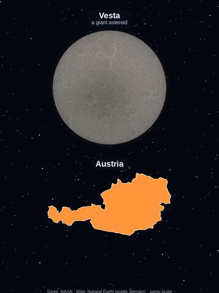
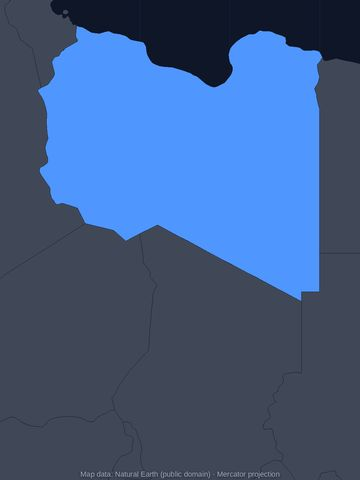
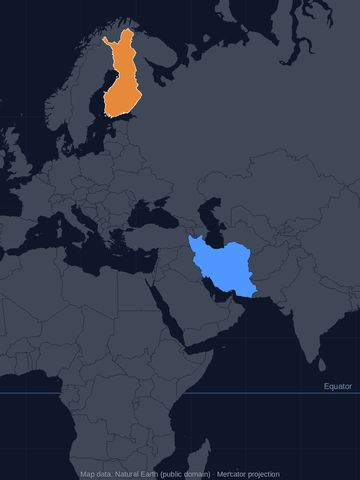
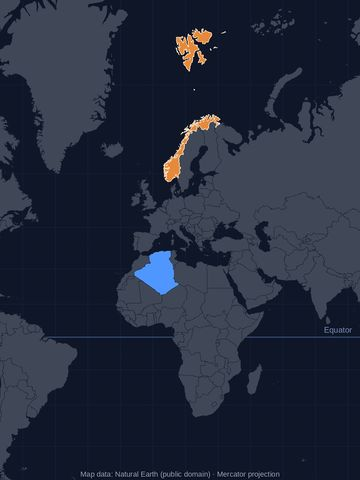

All videos
Every Wait, That Big? video so far, newest first. Open one to make your guess and see the answer.

#7 · Space: which is wider? Vesta or Austria: which is wider? #6 · What if…?
What if Australia were in the Middle East?
#6 · What if…?
What if Australia were in the Middle East?

#5 · How many fit? How many Swedens fit inside Libya?
#4 · Which is bigger? Finland or Iran: which is bigger? #3 · What if…?
What if Indonesia were in the Middle East?
#3 · What if…?
What if Indonesia were in the Middle East?
 #2 · How many fit?
How many Uruguays fit inside Greenland?
#2 · How many fit?
How many Uruguays fit inside Greenland?

#1 · Which is bigger? Norway or Algeria: which is bigger?